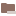
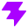

Lucide
Official SVGQuickForge 当前操作与文件图标来源。线性、统一、克制，但不同代码语言的轮廓差异较少。
lucide-icons/lucide · f930bbe0
搜索文件和路径…
README.md
Dockerfile
本页直接加载 Lucide、VS Code Seti、Material Icon Theme 与 Catppuccin Icons 官方仓库中的原始 SVG 或 WOFF 资产， 并按各主题的官方文件名、扩展名或语言映射展示同一组项目文件。
QuickForge 当前操作与文件图标来源。线性、统一、克制，但不同代码语言的轮廓差异较少。
VS Code 内置文件 Icon 主题。这里直接加载官方 seti.woff 和官方字形颜色；官方主题不提供目录 Icon。
类型和特殊目录覆盖最丰富。展示使用官方 SVG，并按官方 fileIcons、folderIcons 规则选择资产。

hooks
vite.config.ts柔和粉彩主题。浅色使用官方 Latte SVG，深色自动切换为官方 Mocha SVG。
官方 Seti 的文件字形很克制，但它没有目录 Icon；如果需要“像 VS Code 插件主题一样”的完整文件夹与文件识别，Material 的覆盖最成熟。
以下资产均来自对应官方 Git 仓库的固定提交。HTML 只引用本地副本，方便离线查看和后续评审。
lucide-icons/lucide
Commit：f930bbe07c92f57244515d9810e9ecbfdafd4488
许可证：ISC，部分 Feather 派生图标为 MIT。
microsoft/vscode/extensions/theme-seti
Commit：cc3e0fe114f721ed5a87317223b2822b597b174e
资产基于 Seti UI，ThirdPartyNotices 中附 MIT 条款。
material-extensions/vscode-material-icon-theme
Version：5.36.1
Commit：cf0df2b786de4eca01b06cb7118435c6d195a0d1
许可证：MIT。
catppuccin/vscode-icons
Version：1.26.0
Commit：b6915da9f6889b683a110aa747de96c2820a537d
许可证：MIT。
seti.woff，字形编码与颜色来自官方 vs-seti-icon-theme.json。
Material 与 Catppuccin 的文件资产选择依据各仓库官方映射源码；Seti 因官方主题没有 Folder Icon，目录行特意留空而没有补用模拟图标。